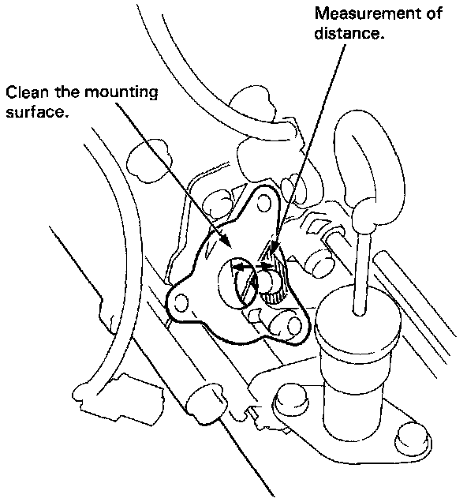
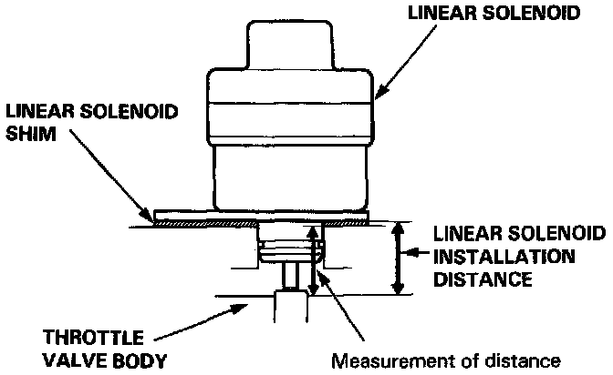
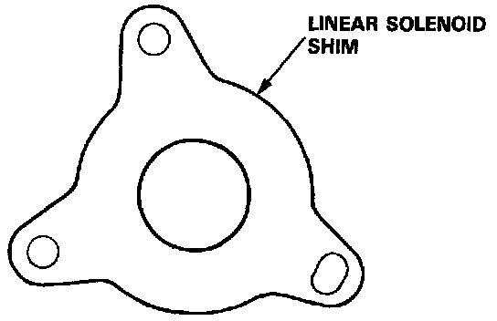
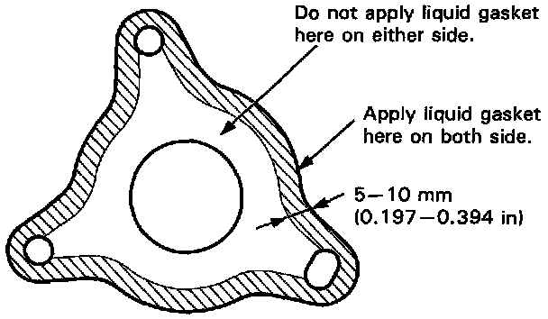
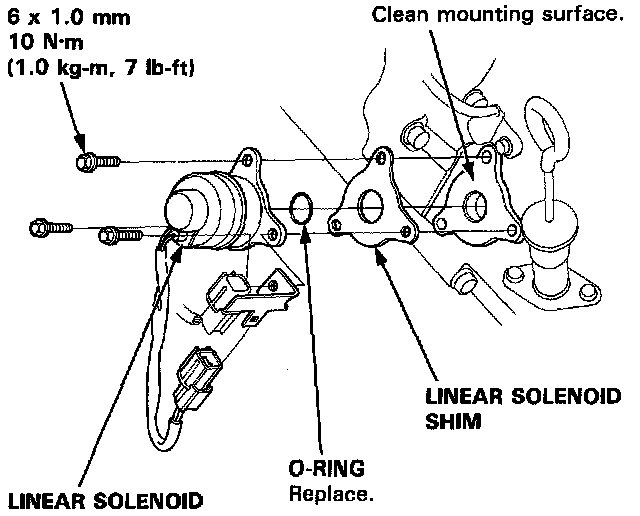

Throttle Valve Solenoid: Service and Repair

LINEAR SOLENOID
NOTE: Select the appropriate shim when the linear solenoid is replaced.
1. Remove the linear solenoid and shim from the transmission housing.
2. Clean the mounting surface.

3. Measure the distance between the mounting surface of the linear solenoid and the throttle valve body.
Linear Solenoid Installation Distance: 23.5-23.7 mm (0.925-0.933 in)
NOTE: If the measurement of distance is 21.6 mm (0.850 in), select the shim of 2.0 mm (0.079 in) to obtain the installation distance of 23.6 mm (0.929 in).

Linear Solenoid Shim
4. Select a new shim from the chart.
NOTE: Identification color is painted on the side of the shim.
5. Apply liquid gasket to both sides of the linear solenoid shim as shown. Use liquid gasket Part No. 08718-0001.
CAUTION:
- Install the linear solenoid within 10 minute of applying the liquid gasket.
- After installation, wipe off any liquid gasket, that squeezed out from around the linear solenoid shim.

NOTE:
- Check that the mounting surfaces are clean and dry before applying liquid gasket. Degrease if necessary.
- Apply the liquid gasket evenly.
- Do not install the parts if 10 minutes or more has passed since you first applied the liquid gasket. If 10 minutes has passed, reapply liquid gasket after removing the residue.
- Wait at least 30 minutes before filling with oil.

6. Install the linear solenoid and shim to the transmission housing.